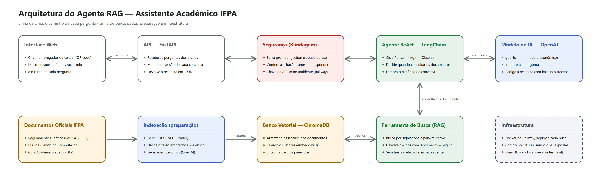

Componente curricular: Tópicos Avançados em Computação I (Miniprojeto 1)
Discentes: [Nome do Integrante 1 (líder)], [Nome do Integrante 2], [Nome do Integrante 3], [Nome do Integrante 4]
Local e data: Ananindeua – PA, outubro de 2026
O assistente combina a Geração Aumentada por Recuperação (RAG), que injeta no contexto do modelo trechos recuperados de uma base externa (LEWIS et al., 2020), com um agente no paradigma ReAct, que intercala raciocínio, ação e observação (YAO et al., 2023). A arquitetura (Figura 1) tem dois fluxos. Na preparação, os documentos oficiais (Resolução CONSUP nº 945/2023, PPC e Guia Acadêmico 2025) são lidos pelo PyPDFLoader, fatiados, vetorizados com o text-embedding-3-small e armazenados no ChromaDB. Na consulta, a pergunta chega a uma API FastAPI no Railway, passa pela camada de segurança e é entregue ao agente.
Figura 1 – Arquitetura do agente

Fonte: elaborado pelos autores (2026).
O agente é criado com create_agent do LangChain e executado como um grafo LangGraph. O modelo gpt-4o-mini, com temperatura zero, realiza o ciclo Thought → Action → Observation: decide se precisa consultar os documentos, chama a ferramenta de busca, lê os trechos e repete até reunir evidência suficiente. A memória de sessão é mantida por um InMemorySaver, e um middleware limita o histórico enviado ao modelo a 6 mil tokens.
As ferramentas foram implementadas como funções Python decoradas com @tool. Suas docstrings funcionam como contrato com o modelo: descrevem quando usar a ferramenta, quais argumentos fornecer e como interpretar o retorno (Quadro 1).
Quadro 1 – Ferramentas disponíveis ao agente
| Ferramenta | Entrada | Saída e uso |
|---|---|---|
buscar_normas_ifpa | consulta: pergunta reescrita em termos normativos; pensamento: motivo da busca | Até 7 trechos no formato "documento | página | artigo | relevância", ou SEM_EVIDENCIA quando nada é relevante. Uso obrigatório antes de qualquer resposta sobre normas. |
listar_documentos_oficiais | Nenhuma | Lista dos documentos indexados, usada quando o usuário pergunta quais fontes o assistente conhece. |
Fonte: elaborado pelos autores (2026).
O parâmetro pensamento torna o Thought explícito e auditável no log, pois modelos com chamada nativa de ferramentas costumam omitir o raciocínio textual. Internamente, a busca é híbrida: a busca vetorial no ChromaDB (4 trechos, distância de cosseno) decide se há evidência, e o índice lexical BM25 (ROBERTSON; ZARAGOZA, 2009), com 3 trechos, complementa com termos exatos, como "abono" ou "trancamento".
O texto é fatiado pelo RecursiveCharacterTextSplitter com chunk_size de 1200 caracteres (cerca de 300 tokens) e chunk_overlap de 200 caracteres (cerca de 17%). Os separadores priorizam a hierarquia das normas — TÍTULO, CAPÍTULO, Seção, Art. e § — antes das quebras genéricas de parágrafo, linha e frase. Quanto ao contexto, a unidade de sentido de uma norma é o artigo com seus parágrafos (em geral de 600 a 1200 caracteres): trechos menores separariam a regra de suas exceções, e maiores misturariam artigos, diluindo o vetor. Quanto ao custo (FinOps), cada busca injeta no máximo cerca de 2.000 tokens, e a indexação completa (~116 mil tokens) custa cerca de US$ 0,002.
A primeira versão fatiava por página, cortando artigos e levando o agente a atribuir números de artigo errados a parágrafos isolados. Na versão final, o documento é fatiado inteiro, a página de cada trecho é calculada pelo deslocamento no texto e os trechos que começam no meio de um artigo recebem o prefixo "(continuação do Art. N)". O resultado são 480 trechos, dos quais 164 começam exatamente em "Art." e 376 estão rotulados com o artigo a que pertencem.
Modelos de linguagem podem gerar conteúdo fluente, porém sem sustentação nas fontes (JI et al., 2023). Como o roteiro exige que toda resposta sobre normas seja ancorada nos documentos oficiais, a mitigação foi organizada em cinco camadas complementares (Quadro 2).
Quadro 2 – Camadas de mitigação de alucinações
| Camada | Mecanismo | Justificativa |
|---|---|---|
| Entrada | Limite de 1000 caracteres e detecção de prompt injection | Impede que o usuário altere as regras do agente, sem gerar custo. |
| Tráfego | Limite de 15 perguntas por minuto por IP | Protege a cota da API contra abuso. |
| System prompt | Documentos como única fonte, busca e citação obrigatórias, recusa de temas fora do escopo, temperatura zero | Restringe o modelo ao conteúdo recuperado. |
| Recuperação | Limiar de distância de cosseno (0,75) e retorno SEM_EVIDENCIA | Sem evidência, o agente admite que não encontrou a informação. |
| Saída | JSON reparado (json-repair) e validado (Pydantic); citações e números de artigo conferidos contra os trechos recuperados | Descarta fontes inventadas e rebaixa a confiança da resposta quando algo não confere. |
Fonte: elaborado pelos autores (2026).
Nos testes em produção, o agente citou corretamente o Art. 88 da Resolução nº 945/2023 (frequência mínima de 75%, vedado o abono de faltas), admitiu não encontrar o valor da bolsa de monitoria, ausente da base, e bloqueou a tentativa de prompt injection sem custo de API.
INSTITUTO FEDERAL DE EDUCAÇÃO, CIÊNCIA E TECNOLOGIA DO PARÁ. Guia Acadêmico 2025. Belém: IFPA, 2025.
INSTITUTO FEDERAL DE EDUCAÇÃO, CIÊNCIA E TECNOLOGIA DO PARÁ. Projeto Pedagógico do Curso de Bacharelado em Ciência da Computação. Ananindeua: IFPA, Campus Ananindeua.
INSTITUTO FEDERAL DE EDUCAÇÃO, CIÊNCIA E TECNOLOGIA DO PARÁ. Resolução CONSUP nº 945/2023: Regulamento Didático-Pedagógico do Ensino. Belém: IFPA, 2023.
JI, Z. et al. Survey of hallucination in natural language generation. ACM Computing Surveys, New York, v. 55, n. 12, p. 1-38, 2023.
LEWIS, P. et al. Retrieval-augmented generation for knowledge-intensive NLP tasks. Advances in Neural Information Processing Systems, [s. l.], v. 33, p. 9459-9474, 2020.
ROBERTSON, S.; ZARAGOZA, H. The probabilistic relevance framework: BM25 and beyond. Foundations and Trends in Information Retrieval, Hanover, v. 3, n. 4, p. 333-389, 2009.
YAO, S. et al. ReAct: synergizing reasoning and acting in language models. In: INTERNATIONAL CONFERENCE ON LEARNING REPRESENTATIONS, 11., 2023, Kigali. Proceedings [...]. [S. l.]: ICLR, 2023.